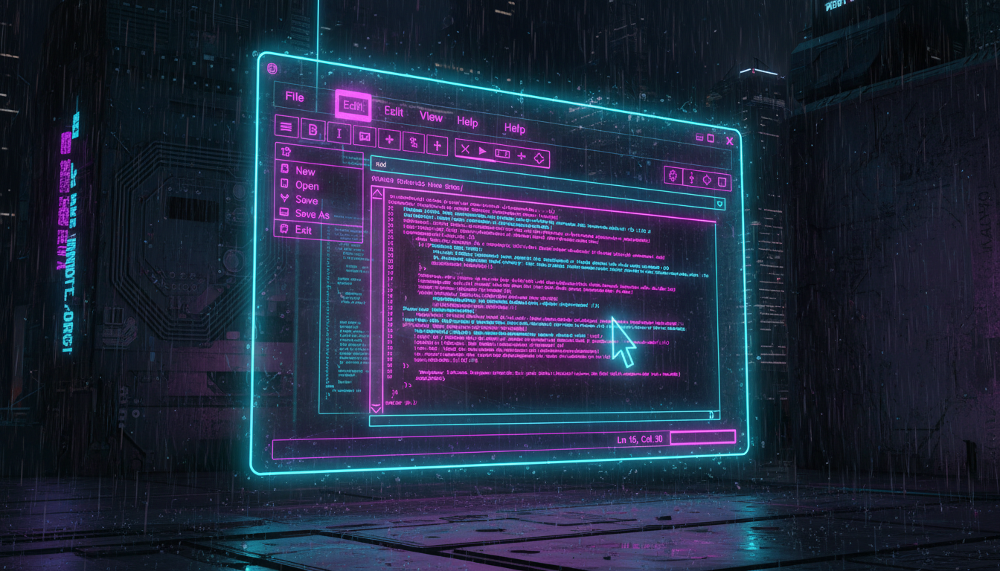

Notepad-клон: меню, робота з файлами, RichTextBox

public ref class NotepadForm : public Form {
private:
RichTextBox^ editor;
String^ currentFile = "";
bool isModified = false;
public:
NotepadForm() {
this->Text = "Без назви - Редактор";
this->Size = Size(800, 600);
// RichTextBox
editor = gcnew RichTextBox();
editor->Dock = DockStyle::Fill;
editor->Font = gcnew Font("Consolas", 11);
editor->BackColor = Color::FromArgb(30, 30, 40);
editor->ForeColor = Color::LightGreen;
editor->WordWrap = true;
editor->AcceptsTab = true;
editor->TextChanged += gcnew EventHandler(
this, &NotepadForm::OnTextChanged);
this->Controls->Add(editor);
// Меню
CreateMenu();
// Панель інструментів
CreateToolbar();
// Рядок стану
CreateStatusBar();
}
void CreateMenu() {
MenuStrip^ menu = gcnew MenuStrip();
// Файл
ToolStripMenuItem^ mFile = gcnew ToolStripMenuItem("Файл");
mFile->DropDownItems->Add("Новий", nullptr,
gcnew EventHandler(this, &NotepadForm::OnNew));
mFile->DropDownItems->Add("Відкрити...", nullptr,
gcnew EventHandler(this, &NotepadForm::OnOpen));
mFile->DropDownItems->Add("Зберегти", nullptr,
gcnew EventHandler(this, &NotepadForm::OnSave));
mFile->DropDownItems->Add("Зберегти як...", nullptr,
gcnew EventHandler(this, &NotepadForm::OnSaveAs));
menu->Items->Add(mFile);
// Редагування
ToolStripMenuItem^ mEdit = gcnew ToolStripMenuItem("Редагування");
mEdit->DropDownItems->Add("Вирізати", nullptr,
gcnew EventHandler(this, &NotepadForm::OnCut));
mEdit->DropDownItems->Add("Копіювати", nullptr,
gcnew EventHandler(this, &NotepadForm::OnCopy));
mEdit->DropDownItems->Add("Вставити", nullptr,
gcnew EventHandler(this, &NotepadForm::OnPaste));
menu->Items->Add(mEdit);
this->Controls->Add(menu);
}
void OnOpen(Object^ s, EventArgs^ e) {
OpenFileDialog^ dlg = gcnew OpenFileDialog();
dlg->Filter = "Текст (*.txt)|*.txt|Всі файли|*.*";
if (dlg->ShowDialog() == DialogResult::OK) {
editor->Text = File::ReadAllText(dlg->FileName);
currentFile = dlg->FileName;
isModified = false;
this->Text = Path::GetFileName(currentFile) + " - Редактор";
}
}
void OnSave(Object^ s, EventArgs^ e) {
if (currentFile->Length > 0) {
File::WriteAllText(currentFile, editor->Text);
isModified = false;
} else {
OnSaveAs(s, e);
}
}
};